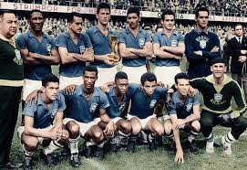
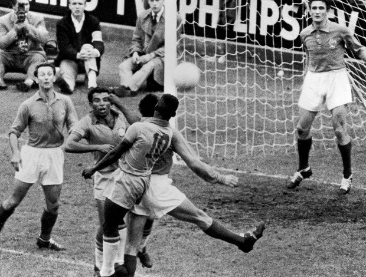

Copa da Suecia 1958
A opção pela Suécia para ser a anfitriã em 1958 foi tomada com 10 anos de antecedência, no Congresso da Fifa realizado em Londres. A confirmação oficial foi no Rio de Janeiro, em 1950. E acabou sendo a primeira Copa do Mundo sem a presença de Jules Rimet: o presidente da Fifa morreu dois anos antes, em 1956.
Foi a Copa em que o Brasil mostrou ao mundo o garoto de 17 anos que se tornou o maior jogador de todos os tempos. Foi a Copa em que o Brasil mostrou ao mundo um gênio de pernas tortas cujos dribles eram impossíveis de conter. Pelé e Garrincha eram reservas de Joel e Dida e se tornaram titulares apenas no terceiro jogo do Brasil. Dali em diante, mudaram o rumo da Copa e do futebol. Como não lembrar os golaços do Rei do Futebol contra País de Gales e França? E o time ainda tinha outros craques que entraram para a história, como Didi, Nilton Santos, Djalma Santos e Zito. E jogadores com o carisma de Gilmar, Bellini, Vavá, Zagallo, Orlando. Depois da estreia em que bateu a Áustria por 3 a 0 e do empate por 0 a 0 com a Inglaterra, surgiram as vitórias consagradoras - 2 a 0 sobre a União Soviética, 1 a 0 sobre País de Gales, 5 a 2 sobre a França, na semi, e sobre a Suécia, na decisão.

O Artileiro.
Velocidade, dribles curtos, chutes precisos, cabeçadas mortais... O que mais poderia caracterizar um bom atacante? Essas virtudes faziam parte do repertório de Just Fontaine, centroavante francês, goleador da competição com 13 gols em seis jogos. Essa marca do camisa 9 nascido no Marrocos é um recorde em Mundiais que ainda não foi batido.

Copa de 1962
O estádio Nacional de Santiago recebeu mais de 75 mil espectadores para o jogo da semifinal entre Chile x Brasil, em 1962. Construído em 1937, sua capacidade máxima era de 74 mil pagantes. Amarildo substituiu Pelé, a partir do segundo jogo da copa, e não deixou por menos. Tanto que ganhou o apelido de “possesso”.

2. O Mundial de 1962 foi palco de uma das mais violentas partidas da história das Copas. O clima entre chilenos e italianos não estava nada amigável. Isso porque a imprensa italiana havia pegado pesado com os anfitriãos, falando mal tanto do povo chileno como da infra-estrutura do país-sede, sem considerar que o Chile acabara de enfrentar um dos mais trágicos terremotos de sua história. Itália e Chile jogaram logo na fase de grupos, em partida cuja primeira falta aconteceu já aos 12 segundos. Não demorou para que o italiano Giorgio Ferrini fosse expulso, depois de cometer uma falta violenta em Honorino Landa. Ferrini se recusou a sair de campo e teve de ser retirado à força por policiais chilenos. Landa, por outro lado, aproveitou a confusão para desferir um soco num italiano, ato totalmente ignorado pelo juiz. Depois de outra falta, o chileno Leonel Sánchez aproveitou a brecha do juiz e socou o italiano Mario David, que acabou expulso por revidar de forma ainda mais violenta. Sánchez, não satisfeito, mandou uma canhota no italiano Humberto Maschio, e quebrou o nariz do jogador. Os policiais ainda tiveram que voltar a campo três vezes para apartar jogadores até o fim do jogo. O Chile ganhou por 2 x 0, e a partida ganhou o apelido de “Batalha de Santiago”.
Os Artilheiros
Quando a Copa terminou, eram seis os artilheiros: Vavá e Garrincha, do Brasil, Leonel Sánchez, do Chile, Albert, da Hungria, Valentin Ivanov, da União Soviética, e Jerkovic, da Iugoslávia, todos com quatro gols.